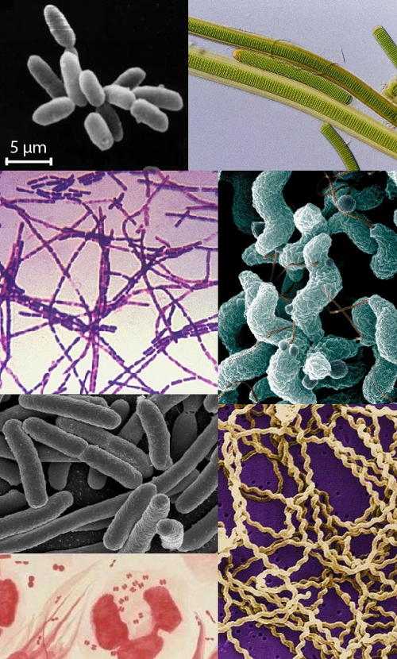

Reino Monera
Son organismos microscópicos, unicelulares (Procariotas). Por ejemplo: Eubacterias, Archeabacterias 5 um y algas verde-azules. Nutrición absorbente, quimiosintética, fotoheterotrófica o fotoautotrófica. Metabolismo anaerobio, facultativo, microaerófilo o aerobio. Reproducción asexual (a veces hay recombinación genética). Generalmente no móviles, y si lo son es por flagelos o por deslizamiento.